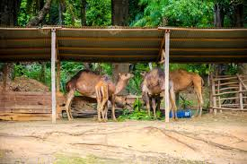
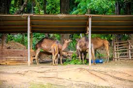
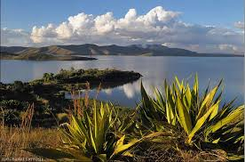
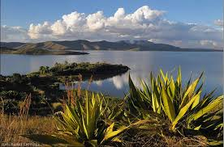

🌍 Sites remarquables de Madagascar
🏛 Province d’Antananarivo
Sites historiques
Rova d’Antananarivo – symbole de la royauté Merina.
Ambohimanga – colline royale sacrée, classée UNESCO.

Palais d’Andafiavaratra – ancienne résidence du Premier ministre Rainilaiarivony.
Vieille ville Haute de Tana – architecture coloniale et royale.
Sites touristiques
Lemurs’ Park – réserve privée de lémuriens.

Parc Botanique et Zoologique de Tsimbazaza – biodiversité malgache.
 
Mantasoa – lac artificiel et vestiges industriels de Laborde.
Ambatofotsy & Anjozorobe – forêts humides périphériques.
Sites balnéaires
Lac Mantasoa & Lac Itasy – pique-nique, pêche, pirogue.
 
🌴 Province de Toamasina
Sites historiques
Fort Manda à Foulpointe – fortification du XVIIᵉ siècle.
Vestiges de la Compagnie des Indes à Tamatave – ruines coloniales.
Phare de l’Île aux Prunes – construit par les Français.
Sites touristiques
Parc national d’Andasibe-Mantadia – forêt humide, Indri-Indri.
Réserve d’Ivoloina – zoo éducatif, sentiers botaniques.
Canal des Pangalanes – long canal colonial longeant la côte.
Île Sainte-Marie – forêts, histoire pirate, baleines.
Sites balnéaires
Foulpointe (Mahavelona) – lagon protégé.
Mahambo – spot de surf.
Île Sainte-Marie – plages de sable blanc.
Île aux Nattes – paradis balnéaire.
🌿 Province de Fianarantsoa
Sites historiques
Vieille Ville de Fianarantsoa – maisons traditionnelles et cathédrale.
Cathédrale d’Ambositra – ville artisanale Betsileo.
Train FCE – ligne ferroviaire coloniale historique.
Sites touristiques
Parc national de Ranomafana – forêt tropicale humide.

Parc national d’Andringitra – pics montagneux, Pic Boby.
Réserve de l’Anja – lémuriens makis catta.
Ambositra – capitale de l’artisanat marqueté.
Sites balnéaires
Manakara – petite ville côtière accessible par train.

🌅 Province de Mahajanga
Sites historiques
Vieille ville de Majunga – architecture coloniale.
Mosquée de Majunga – héritage swahili et arabe.
Fortifications anciennes (Katsepy).
Sites touristiques
Parc national d’Ankarafantsika – oiseaux endémiques.
Cirque Rouge – formations géologiques colorées.
Grottes d’Anjohibe – stalactites et rivières souterraines.
Sites balnéaires
Plages de Majunga – ambiance urbaine et festive.
Katsepy – petite plage et phare historique.

🏝 Province d’Antsiranana
Sites historiques
Vieille base coloniale de Diego-Suarez.
Fort militaire du Cap Diego.
Vestiges navals de la baie de Diego.
Sites touristiques
Parc national de la Montagne d’Ambre – forêt tropicale humide.
Réserve spéciale de l’Ankarana – Tsingy calcaires.


Les Trois Baies – Sakalava, Pigeons, Dunes.

Sites balnéaires
Plage de Ramena – sable blanc et eaux turquoise.

Mer d’Émeraude – lagon spectaculaire.
Nosy Be – île touristique phare du nord.
🌞 Province de Toliara
Sites historiques
Ifaty – village de pêcheurs Vezo, artisanat.
Antsokay Arboretum – collection de plantes endémiques.
Vestiges de Fort Dauphin (Taolagnaro).
Sites touristiques
Parc national de l’Isalo – canyons, piscines naturelles.


Parc national de Tsimanampetsotse – lacs salés et flamants roses.
Réserve de Berenty – faune endémique du sud.
Sites balnéaires
Ifaty & Mangily – lagons et plages paradisiaques.
Anakao – village de pêcheurs et plage.
Fort Dauphin – belles plages du sud-est.
Nosy Ve – petite île au large de Tulear.